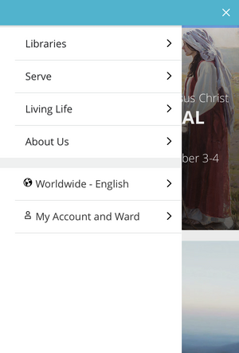
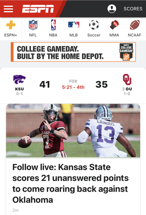

Hick's Law
Church of Jesus Christ of Latter-Day Saints
churchofjesuschrist.org The Church's website is a great example of Hick's Law. This options page gives you six options to choose from. From there they subdivide into furthur categories. It makes it really easy for the user to find what they want.
White Space and Clean Design
ESPN
espn.com ESPN does a great job of using white space. The creators of this site did a great job of not trying to cram too many things on the page. On the top of the screen you can search for what sports you are interested in watching. There is plenty of padding which makes the site very easy to read.
Rule of Thirds
Target
target.comTarget does a great job with the rule of thirds principle in this advertisment. The picture includes a girl on the left, the discount in the middle, and a women on the right side.